THE PLEASURE OF SHARING KNOWLEDGESome Motivating, Suggestive and Original Courses Mathematically, Statistically and Engineering Related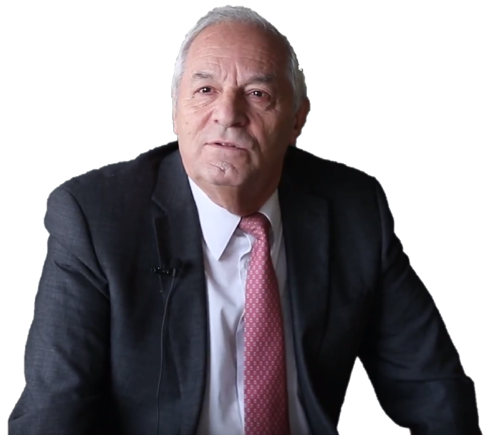 Profesor Enrique Castillo RonBorn in Santiago de Compostela (Spain) 17/10/1946
|
Course 1. Algebra I (English)The main originality of this course consists in that all discussed problems of linear algebra are solved using a single algorithm, that gives the orthogonal subspace of a linear subspace and its complementary subspace. This permits analyzing all problems from the orthogonality point of view, which is very reach. For example, the problem of determining whether or not a vector belongs to a subspace or the intersection of two subspaces are solved by looking to them as orthogonalization problems. The algorithm permits inverting a matrix, calculating its determinant or determining its rank very easily. In addition the problems of updating inverses and determinants when changing a row reduce to a single step of the algorithm. The compatibility of systems of equations and the obtention of all its solutions or detecting infeasibility are also a direct application of the algorithm. In addition, all subsystems of a given linear system can be solved without extra calculations. Finally, some examples of illustrative applications are given.Download
|
Course 2. Algebra I (Spanish)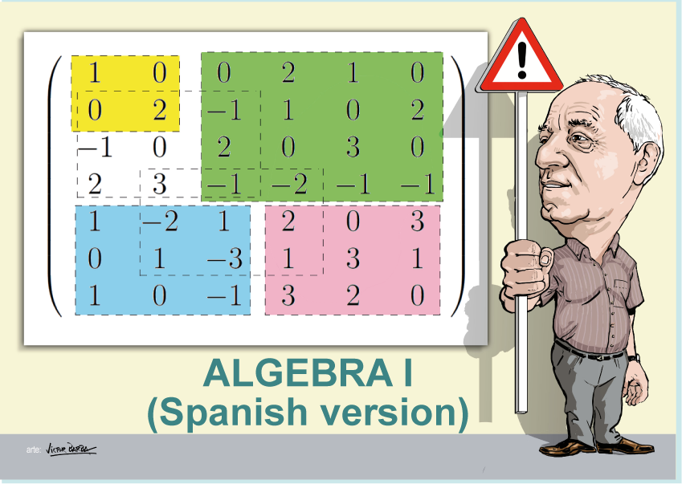 The main originality of this course consists in that all discussed problems of linear algebra are solved using a single algorithm, that gives the orthogonal subspace of a linear subspace and its complementary subspace. This permits analyzing all problems from the orthogonality point of view, which is very reach. For example, the problem of determining whether or not a vector belongs to a subspace or the intersection of two subspaces are solved by looking to them as orthogonalization problems. The algorithm permits inverting a matrix, calculating its determinant or determining its rank very easily. In addition the problems of updating inverses and determinants when changing a row reduce to a single step of the algorithm. The compatibility of systems of equations and the obtention of all its solutions or detecting infeasibility are also a direct application of the algorithm. In addition, all subsystems of a given linear system can be solved without extra calculations. Finally, some examples of illustrative applications are given.Download |
Course 3. Algebra II (English)We first introduce the concepts of polyhedral cone and polytope. Next, similarly to the algebra course I, an algorithm, which obtains the dual cone of a given cone and all its facets of any dimension, allows us to solve all discussed problems of linear algebra using the duality concept as a new point of view. This duality point of view allow us to solve the cone membership of a vector and the intersection of cones in a very simple way. In addition, the algorithm provides the dual cone in its simplest form, that is, as a linear space with its basis plus an acute cone with its edges. The compatibility of a linear system of inequalities is discussed and all the solutions of linear systems of inequalities are obtained. In addition, the solutions of all subsystems including all equations from the first to any of them are obtained at once. The concept of cone associated with a polytope permits us to obtain all vertices and all facets of any dimension of a polytope. The set of all feasible solutions of a linear programming problem and all its optimal solutions are obtained, and infeasibility is detected by the algorithm. Finally an example of a water supply problem is presented to show the importance of these methods in engineering design.Download |
Course 4. Algebra II (Spanish)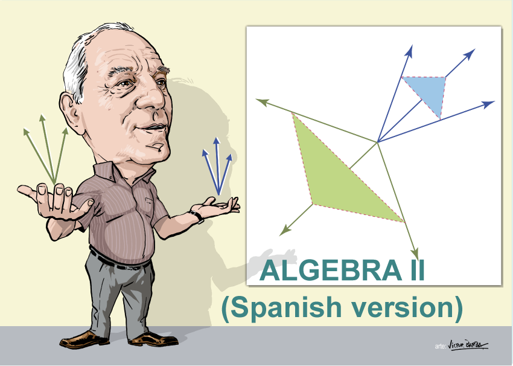 We first introduce the concepts of polyhedral cone and polytope. Next, similarly to the algebra course I, an algorithm, which obtains the dual cone of a given cone and all its facets of any dimension, allows us to solve all discussed problems of linear algebra using the duality concept as a new point of view. This duality point of view allow us to solve the cone membership of a vector and the intersection of cones in a very simple way. In addition, the algorithm provides the dual cone in its simplest form, that is, as a linear space with its basis plus an acute cone with its edges. The compatibility of a linear system of inequalities is discussed and all the solutions of linear systems of inequalities are obtained. In addition, the solutions of all subsystems including all equations from the first to any of them are obtained at once. The concept of cone associated with a polytope permits us to obtain all vertices and all facets of any dimension of a polytope. The set of all feasible solutions of a linear programming problem and all its optimal solutions are obtained, and infeasibility is detected by the algorithm. Finally an example of a water supply problem is presented to show the importance of these methods in engineering design.Download |
Course 5. Extreme Values (English).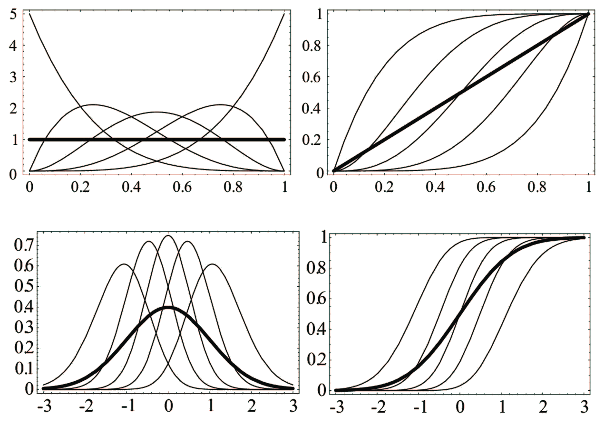 In this course we start by introducing order statistics and extremes. In particular, the density functions of any order statistic or any subset of them are given in closed form. Next, we indicate that no matter the parent distribution is, the limit distribution of the maximum belongs to the Levy-Jenkinson family, which includes only the families of Weibull, Gumbel and Frechet. The corresponding limit distributions for the case of minimum are given too. The cases of other order statistics are also analyzed and discussed. The use of probability papers to find the most adequate limit distribution is explained and justified. Exceedances are recommended instead of extremes, because of its better efficiency and the generalized Pareto distribution is analyzed. The case of dependence is shown to lead to the same limits distributions if the dependence is not too strong, and to other limit distribution if it is strong enough. One illustrative example of extreme waves is studied in some detail.Download |
Course 6. Bayesian methods. OpenBUGS (English).
This course is dedicated to describe in detail what Bayesian methods are, including prior, posterior and predictive distributions, and the use of Markov Chain Monte Carlo (MCMC) methods using OpenBUGS. We start with, a short description, with some examples, including the concept of conjugate distributions. We explain how these methods permit to convert a deterministic model into a random model by converting its parameters into random variables, as Bayesian method do, or to improve already random models into more complex ones using the same conversion. The OpenBUGS software is described and used to solve several classical methods in Statistics and Probability. We explain how the use of scripts can facilitate and speed up the simulation process. Apart form these examples, we include some fatigue models examples that show how we can even obtain the percentiles of percentile curves. This permit treating the randomness due to parameters.Download |
Course 7. Mathematical model building (English).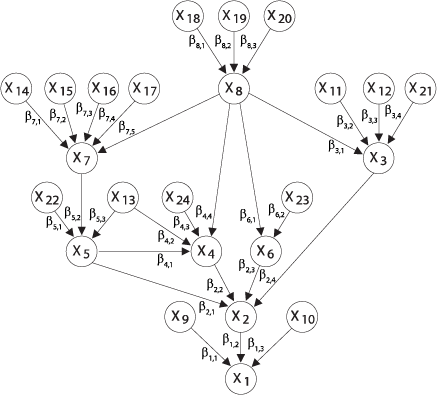 This course discusses how to build mathematical models to reproduce the physical and engineering reality. First, the Buckingham theorem is given together with some examples to illustrate the importance of using dimensionless ratios or variables, in order to reduce complexity and to avoid dimensional problems. We also discuss the concepts of complete and incomplete self-similarity, which plays a relevant role in model building. The concept of consistency of models is introduced and described. It includes dimension, physical, statistical and extreme value consistencies, which are analyzed in detail. For the sake of illustration, we also discuss multivariate models and provide very interesting examples of fatigue models, including the S-N curves, the crack growth curves and how they can be connected.Download |
Course 8. Functional Equations (English).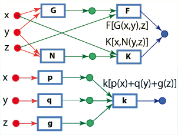 This course introduces functional equations. First we motivate the course using the formulas for the area of a rectangle and a trapezoid, showing that they are not the most correct ones. We give the simple and compound interest formulas together with an interesting interpretation, in terms of account stability. Next, we introduce some classical functional equations, as the associative, the Cauchy's and the Pexider's equations. We continue with the sum of product equations and two examples of applications. Next, we provide a list of ten methods to solve functional equations and illustrate them with some examples. In the final part, we give interesting examples of applications to Economy, Statistics, fatigue, laws of Science and differential equations.Download |
Course 9. Optimization.
In this course we start by introducing order statistics and extremes. In particular, the density functions of any order statistic or any subset of them are given in closed form. Next, we indicate that no matter the parent distribution is, the limit distribution of the maximum belongs to the Levy-Jenkinson family, which includes only the families of Weibull, Gumbel and Frechet. The corresponding limit distributions for the case of minimum are given too. The cases of other order statistics are also analyzed and discussed. The use of probability papers to find the most adequate limit distribution is explained and justified. Exceedances are recommended instead of extremes, because of its better efficiency and the generalized Pareto distribution is analyzed. The case of dependence is shown to lead to the same limits distributions if the dependence is not too strong, and to other limit distribution if it is strong enough. One illustrative example of extreme waves is studied in some detail.Download |
Teaching and importance of mathematics
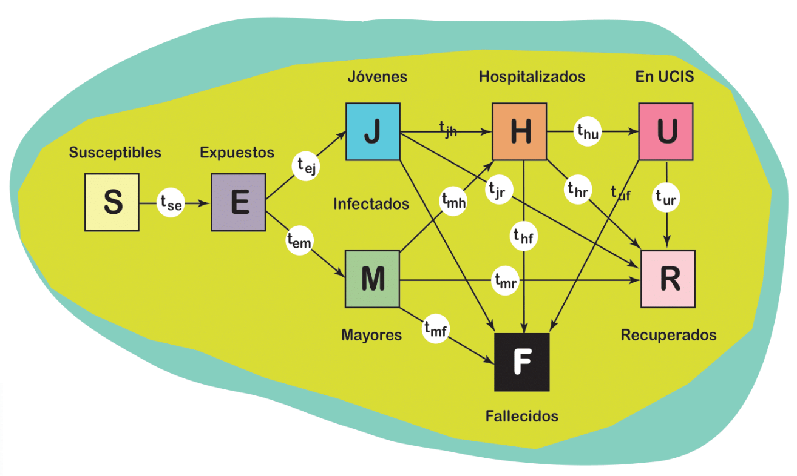
We include here some videos to suggest some ideas about the importance of mathematics and its contribution to Society and how the teaching of mathematics can be improved in order to increase knowledge and its practical applications to solve real problems and make them more attractive to the students. We start by one video showing how mathematics are useful to the Society and how they must be used systematically to solve real problems. Some examples are included, showing that mathematics are present in real life. Next we suggest some changes in the way of teaching mathematics by using master videos which are already available to be used in dayly teaching. If students can have the best teachers and the most knowledgeable persons in a given topic, why ignore this possibility? Finally, we point out the need of changing mathematical contents and ways of explaining them. For example, we propose that to involve the students in web page designs can be a good idea to improve the virtues associated with mathematical thinking.Download |
Algunos ejemplos curiosos de aplicaciones de matemáticas
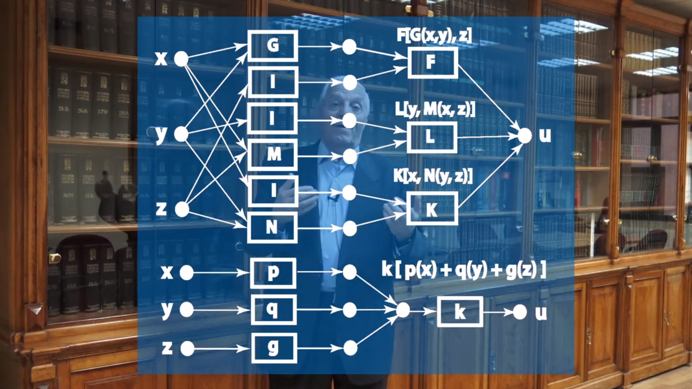
Se dan algunos ejemplos simples de aplicaciones de ecuaciones funcionales para ilustrar su poder. La idea es encontrar todos los modelos posibles que satisfagan una o varias propiedades. Esto permite identificar modelos adecuados para resolver nuestros problemas particulares sin utilizar arbitrariedades. De esta forma garantizamos que se identifiquen todos los modelos que satisfacen esas propiedades. Las aplicaciones involucran varios problemas que incluyen geometría, economía, ciencia de materiales, matemáticas e inteligencia artificial.Descarga |
Cones and polytopes. Linear systems of inequations
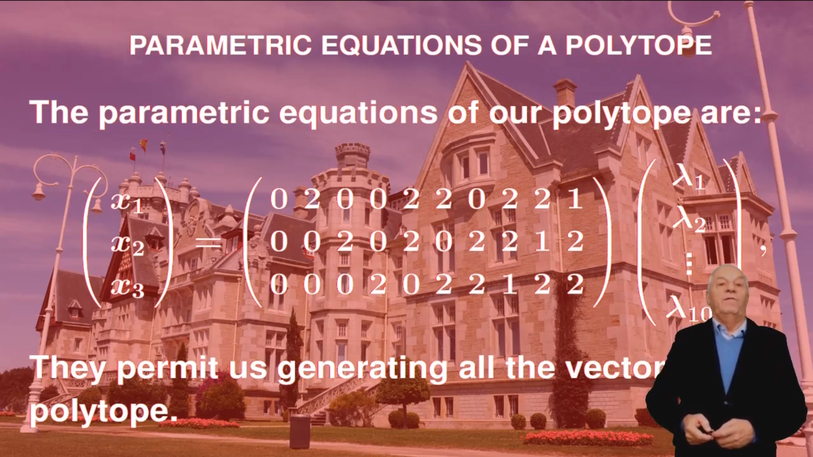
We introduce two very important algebraic structures such as polyhedral convex cones and polytopes, which complememnt vector spaces and are very relevant in practical applications. We also provide some illustrative examples for the user to have an intuitive idea of what cones and polytopes are. Next we define the important concept of dual cone, which is the basic tool to be used in all the applications. As simple examples, we solve the problems of vector membership of a cone and the intersection of two cones, for which a simple look, from the point of view of duality, provides a hint to solve the problem.Download |
Covid models I
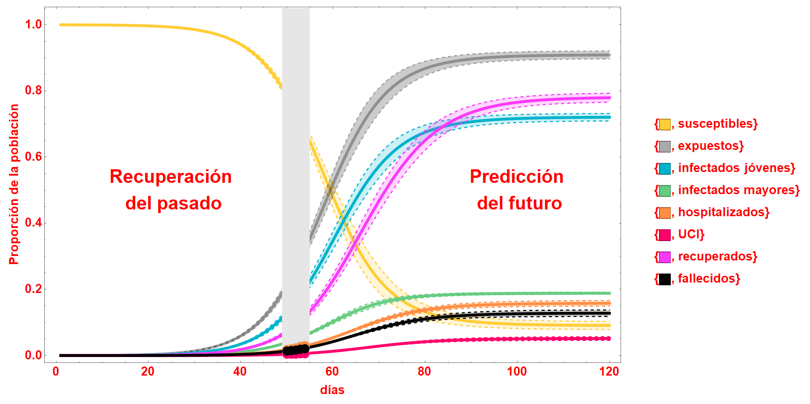
Se describen, paso a paso, todas las etapas necesarias para construir el modelo desde un punto de vista crítico, incluyendo selección de estados, transiciones entre estados, definición de tasas de paso entre estados, obtención de las ecuaciones diferenciales y funcionales, estimación de parámetros a partir de las observaciones y conversión del modelo en uno aleatorio bayesiano. Para ello, se considera que todos los parámetros (tasas) son variables aleatorias. Finalmente se comentan las diferencias y ventajas de los modelos bayesianos. Una aplicación en Mathematica permite analizar la influencia de las medidas de control en los resultados, permitiendo un análisis de sensibilidad, que es muy útil para tomar decisiones.Download |
Covid models II
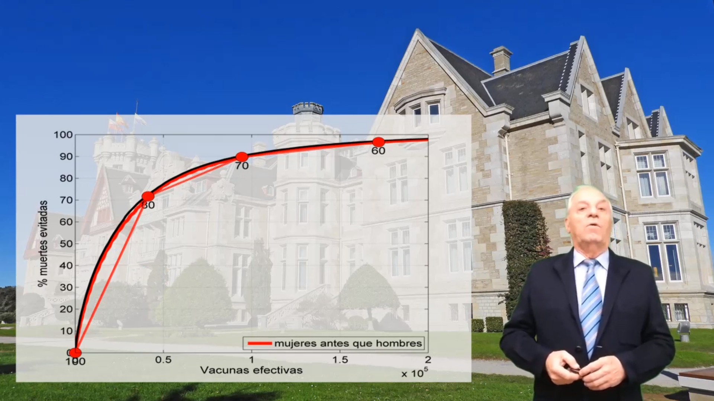
Esta segunda parte se dedica más intensamente a los criterios para vacunar y se insiste en que el riesgo de muerte por Covid, la esperanza de vida restante y la edad son los criterios que deben utilizarse para ordenar la vacunación. No hacerlo así implica aumentar los fallecimientos y retrasar la recuperación, no sólo de la salud, sino también de la acividad económica. Se insiste en que hay criterios erróneos de graves consecuencias, tales como sortear el orden de vacunación o utilizar el orden alfabético. En la parte final se discuten tanto la propagacón como la vacunación, siendo estos vídeos los presentados a reuniones organizadas por las Reales Academias de la Ingeniería y la de Ciencias Exactas, Físicas y Naturales.Download |
Miscelánea
In this section we deal with some interesting vídeos, which do not fit inside other sections. Two of them refer to some colleages of the author, Prof. Barry C. Arnold, from the University of California, and Juan José Arenas, from the University of Cntabria, and they pretend to be a tribute of consideration to the influence they have had on his career and a high personal consideration. The third one refers to a new paradigm to see differential equations, which is more in accordance to the engineering vision. Elements appearing in differential equations need to be analyzed for different situations and the classical way of deleing with them does not facilitates the associated and required studyDownload |
Miscelánea
In this section we deal with some interesting vídeos, which do not fit inside other sections. Two of them refer to some colleages of the author, Prof. Barry C. Arnold, from the University of California, and Juan José Arenas, from the University of Cntabria, and they pretend to be a tribute of consideration to the influence they have had on his career and a high personal consideration. The third one refers to a new paradigm to see differential equations, which is more in accordance to the engineering vision. Elements appearing in differential equations need to be analyzed for different situations and the classical way of deleing with them does not facilitates the associated and required studyDownload |
Seguridad en Carreteras
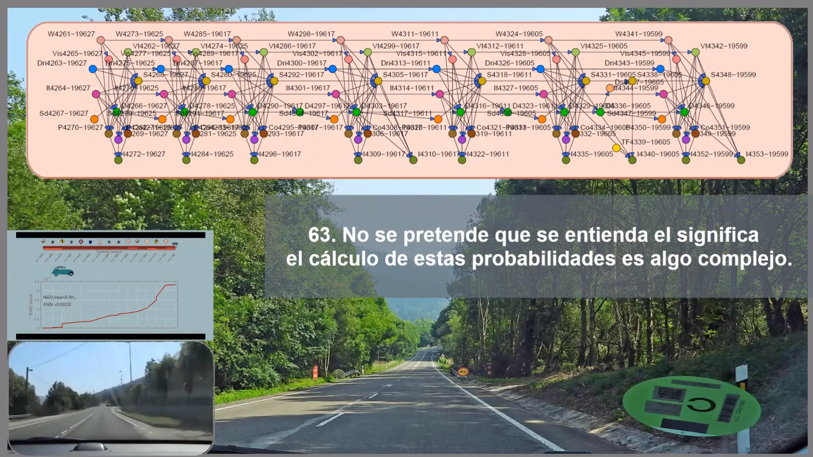
Se presenta un modelo para evaluar la seguridad de carreteras basado en redes bayesianas. El modelo determina el riesgo de incidente en cada punto de la carretera. diferenciando entre puntos con incidentes localizados y segmentos con riesgos en función de la distancia recorrida. Se determina el número de incidentes graves esperados anuales en cada punto o tramo, ponderando los accidentes medios y leves. Finalmente, se explica en detalle cómo se construye la red bayesiana y se presenta una técnica de partición de la red, para reducir drásticamente el tiempo de cálculo. Las particiones permiten evaluar los riesgos particularizados para cada conductor y viaje, en función de sus circunstancias personales y las de la conducción concreta.Download |
Seguridad en Carreteras
Se presenta un modelo para evaluar la seguridad de carreteras basado en redes bayesianas. El modelo determina el riesgo de incidente en cada punto de la carretera. diferenciando entre puntos con incidentes localizados y segmentos con riesgos en función de la distancia recorrida. Se determina el número de incidentes graves esperados anuales en cada punto o tramo, ponderando los accidentes medios y leves. Finalmente, se explica en detalle cómo se construye la red bayesiana y se presenta una técnica de partición de la red, para reducir drásticamente el tiempo de cálculo. Las particiones permiten evaluar los riesgos particularizados para cada conductor y viaje, en función de sus circunstancias personales y las de la conducción concreta.Download |
Álgebra
Se plantea un curso de álgebra desde el punto de vista de la ortogonalidad y la dualidad. Se presenta un algoritmo que obtiene el subespacio ortogonal a un subespacio dado y el cono dual a un cono dado. Se demuestra y se indica cómo se pueden resolver muchos problemas de álgebra con estos únicos algoritmos. En particular se resuelven los problemas: obtención de subespacios ortogonales y complementarios de un subespacio vectorial, inversas de matrices y determinantes, rango de una matriz, actualización de inversas y deter-minantes tras combiar una fila, sistemas lineales homogéneos y completos de ecuaciones e inecuaciones. Compatibilidad de estos sistemas. Se incluyen también ejemplos de un sistema de abastecimiento de agua, circuitos eléctricos y un plano inclinado.Download |
.png)